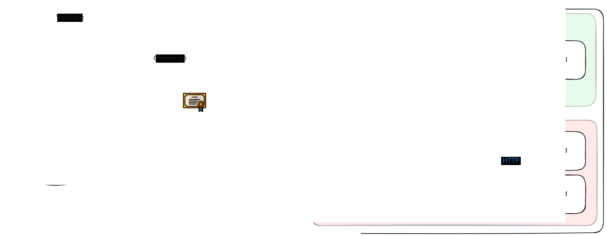

OS¶
Baremetal install¶
The install is based on Flatcar on 3 mini PC For flatcar installation we are relying on the following components :
- PXE
- DHCP
- Butane+Ignition
- Raspberry PI as a controller (HTTP server)
Here a diagram on how things works :
sequenceDiagram
participant Client as iPXE Client (Booting Machine)
participant DHCP_Server as DHCP Server
participant HTTP_Server as HTTP Server
Note over Client,DHCP_Server: iPXE client boots and broadcasts DHCPDISCOVER
Client->>DHCP_Server: DHCPDISCOVER + iPXE options (requests boot info)
DHCP_Server-->>Client: DHCPOFFER + IP address + boot file URL (HTTP)
Client->>DHCP_Server: DHCPREQUEST (accept offer)
DHCP_Server-->>Client: DHCPACK (confirm IP & boot info)
Note over Client,HTTP_Server: iPXE client downloads boot script via HTTP
Client->>HTTP_Server: HTTP GET boot script boot.ipxe
HTTP_Server-->>Client: boot script
Note over Client,HTTP_Server: Download images via HTTP
Client->>HTTP_Server: HTTP GET flatcar_production_pxe.vmlinuz + image.cpio.gz
HTTP_Server-->>Client: Images downloaded
Note over Client,HTTP_Server: First Ignition of the server to install image on disk
Client->>HTTP_Server: HTTP GET <mac_address>_preinstall.ign
HTTP_Server-->>Client: Ignition started
Client->>Client: Reboot
Note over Client,HTTP_Server: Second Ignition of the server to do the postinstall
Client->>HTTP_Server: HTTP GET <mac_address>_postinstall.ign
HTTP_Server-->>Client: Ignition started
3 features are available to help building around this cluster, all these features are shell scripts :
generate.sh: Generate the butane config and therefore the ignition one. Copy at the right place also.rebuild_node.sh: Force boot on PXE and the wanted node (doing some mandatory prerequisite actions).rebuild_cluster.sh: Force boot on PXE and restart all the nodes.
System updates¶
The updates of the flatcar OS are controlled by kured.
It's an workload that is controlling the reboot of every node inside the cluster, here the key features :
- Automatic node reboots after updates : works with Flatcar directly, flatcar is downloading the new image and create a flag which is detected by kured to notify that a reboot is needed
- Coordinated reboots with locking : Ensure 1 node is rebooted at the same time
- Do kube operation: Will do the draining of the node for instance
- Highly configurable
K3s install¶
Network¶
As a network CNI I chose cilium

API HA¶
I needed the following for my cluster :
- A single point of contact for the API
- When I want to reach it for API calls or a node joining the cluster
- Full availability if a node come down
- That eliminates DNS round robin for instance
That why I chose Kube-VIP. It's a daemonset that is deployed during the creation of the cluster.
Kube-VIP uses a leader election mechanism (using Kubernetes Lease or Raft). The elected leader owns and advertises the VIP via gratuitous ARP.
If the leader node goes down:
- Leader lease expires
- Another node is elected
- The new node starts advertising the VIP
- Traffic fails over seamlessly
Storage¶
Here the diagram of the architecture
flowchart TD
subgraph subGraph0["CANADA - Home Network"]
K3sMaster("Node1")
K3sWorker1("Node2")
K3sWorker2("Node3")
Longhorn[("Longhorn Storage")]
SynoNAS[("Synology NAS - Local")]
end
subgraph s1["France"]
ExternalNAS[("External NAS - Remote")]
end
K3sMaster --> Longhorn
K3sWorker1 --> Longhorn
K3sWorker2 --> Longhorn
Longhorn -- "NFS - Nightly backup" --> SynoNAS
SynoNAS -- Mirror over WAN --> s1
style s1 fill:#C8E6C9
style subGraph0 fill:#BBDEFB
I am trying to do the 3-2-1 strategy for my storage :
- 3 copies of your data ==> Longhorn + Synology + External NAS
- 2 different types of storage media ==> Longhorn block storage + NAS (file-based) (even if technically it's classic hard drive disks)
- 1 copy off-site ==> External NAS in another country
LongHorn is acting as main datastore data for live data while my Synology NAS are for cold backup storage
The Synology devices are synced through Synology Drive ShareSync
Backup¶
For the backup I am relying on Longhorn internal features :
- System backup : It is saving the control-plane data of Longhorn (config, volume spec etc...).
- Really lightweight and stored on the Synology
- Run every 30 minutes
- Create a snapshot on every volume each time it's doing its backup (there is another task to delete old replicas)
- Volume backup : It is saving the Volume themselves with their data. Stored on the Synology
- Run every week
Restore¶
On the restore part, two ways of proceeding :
- The cluster is dead but the local disks are fine
- During the rebuild Longhorn will restore one of the system backup and use the last snapshot of the backuped volume
- The cluster is dead, disks as well
- Rebuild the cluster and restore data manually through volume backups
Pipeline¶
CD : FluxCD¶
sequenceDiagram
participant GitRepo as Git Repository
participant Helm as Helm Operator
participant K8s as Kubernetes Cluster
alt Check and update
Helm->>GitRepo: Check new version
GitRepo->>Helm: Download if new
end
alt Rendering and deployment
Helm->>Helm: Render Chart
Helm->>K8s: Apply manifest
end
Secrets¶
The critical part here is not really how to handle the secrets themselves but more the secret zero that avoids to enter in a chicken and eggs scenario The plan is to :
- When bootstrapping the cluster, use SOPS for create secret zero
- Beyond SOPS, using External Secrets Operator to pull in everything else
NB : for onedr0p it's Task file ==> minijinja-cli "${file}" | op inject ==> Replace op://kubernetes/sops/SOPS_PRIVATE_KEY for the secret 0 (sops-age) manifest ==> Secret used in the bootstrap kustomization
Architecture decision¶
Hardware¶
OS¶
CD¶
Argo CD:
- Pros :
- More used in the industry
- Beautiful UI and easy to use
- Cons :
- Harder to bootstrap than flux
- Resource intensive
Flux CD:
- Pros :
- Lightweight
- Discovering a new tool (never work with it)
- Works well with SOPS (for secrets)
- Cons :
- No UI that would have facilitate the day to day
Storage¶
Multiple choices :
- Synology
- Pros:
- No overhead on K8s cluster
- Classic, stable and solid solution
- EASY solution (less than 10min to setup)
- Cons:
- Single point of failure (the device itself not the disks)
- Rook
- Pros:
- Cloud-native
- Local so probably a bit "faster"
- Not a Single Point of Failure because distributed
- Cons:
- Resource overhead (to be calculated) ==> Pretty big, almost 2GB RAM per node
- More complex than the iSCI Synology one (but to be calculated also)
- LongHorn
- Pros:
- Cloud-native
- Local so probably a bit "faster"
- Not a Single Point of Failure because distributed
- Lightweight
- Cons:
- Lightweight but still resource overhead compared to external solution
- More complex than the iSCI Synology one (but to be calculated also)
Benchmark : - Local
==================
= Dbench Summary =
==================
Random Read/Write IOPS: 79.9k/58.3k. BW: 364MiB/s / 429MiB/s
Average Latency (usec) Read/Write: 228.64/69.30
Sequential Read/Write: 534MiB/s / 463MiB/s
Mixed Random Read/Write IOPS: 33.7k/11.2k
- Synology
==================
= Dbench Summary =
==================
Random Read/Write IOPS: 2664/4115. BW: 25.2MiB/s / 20.7MiB/s
Average Latency (usec) Read/Write: /
Sequential Read/Write: 24.9MiB/s / 29.2MiB/s
Mixed Random Read/Write IOPS: 1003/342
- LongHorn
==================
= Dbench Summary =
==================
Random Read/Write IOPS: 3973/2964. BW: 112MiB/s / 40.3MiB/s
Average Latency (usec) Read/Write: 3177.81/
Sequential Read/Write: 127MiB/s / 38.5MiB/s
Mixed Random Read/Write IOPS: 1313/445
Disaster recovery¶
- Using the rebuild_cluster script ✅
- Expected result
- Data correctly restores
- Doing a reboot on every node ✅
- Expected result
- Data is not restored in that case but picked up correctly by Longhorn
- No corruption (at least for the few tests I did) on the volume part
- Took less than 5 minutes to have the pod up & running
- Unplug power cable on every node at the same time ✅
- Exact same result as above
Note : In the last two cases pods are in an unknown state. I used only podinfo to do my test but having more intensive workload could make sense ==> to be redone
To check¶
- https://github.com/kashalls/kromgo
- https://github.com/kubernetes-sigs/external-dns (OVHCloud Provider)
- Signoz pour la supervision ? (tout en 1)
- Tianji pour un uptime kuma ++ ?
Links¶
- https://onedr0p.github.io/home-ops/